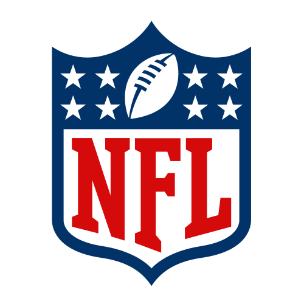

NFLSee the
whole game.
Football research, from every angle.
Available now
Choose your sport
SPORTS DATA & RESEARCH
NFL
NFL REGULAR SEASON
VERIFIED SPORTS DATA
AFC STANDINGS
LOADING DATA#TEAMWLPCTPFPA+/−FORM
FEATURED MATCHUP
CURRENT SEASONWEEKLY RESEARCH
Verified weekly recap
Pittsburgh Steelers
CURRENT ROSTER Loading verified data…
PLAYER RESEARCHLOADING DATA
No players are listed for this position in the current source.
Season schedule
Matchup research
Loading verified team research…
Loading verified matchup research…
Loading verified game report…